정보처리산업기사 (2019-08-04 기출문제)
1과목: 데이터 베이스
1. 개념 스키마에 대한 설명으로 옳지 않은 것은?
- 조직이나 기관의 총괄적 입장에서 본 데이터베이스의 전체적인 논리적 구조이다.
- 실제 데이터베이스가 기억장치 내에 저장 되어 있으므로 저장 스키마라고도 한다.
- 모든 응용 프로그램이나 사용자들이 필요로 하는 데이터를 종합한 조직 전체의 데이터베이스 구조이다.
- 데이터베이스 파일에 저장되는 데이터의 형태를 나타낸 것으로 단순히 스키마라고도 한다.
(정답률: 67%)

2. 데이터베이스관리자(DBA)의 역할로 거리가 먼 것은?
- 데이터베이스에 스키마 정의
- 사용자 통제 및 감시
- 자료의 보안성, 무결성 유지
- 백업 및 회복 전략 정의
(정답률: 73%)
3. 트리 구조에서 각 노드 에서 파생된 직계 노드의 수를 의미하는 것은?
- terminal node
- domain
- attribute
- degree
(정답률: 70%)
4. E-R 모델에서 사각형은 무엇을 의미하는가?
- 관계 타입
- 개체 타입
- 속성
- 링크
(정답률: 83%)
5. 다음 트리에 대한 운행 결과의 순서가 “D → B → A → G → E → H → C → F” 일 경우, 적용된 운행 기법은?
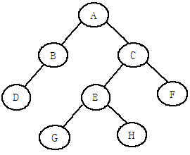
- Post-order
- In-order
- Pre-order
- Last-order
(정답률: 67%)
6. 릴레이션이 기본 키를 구성하는 어떠한 속성값도 널(NULL) 값이나 중복 값을 가질 수 없다는 것을 의미하는 것은?
- 참조 무결성 제약 조건
- 주소 무결성 제약 조건
- 원자값 무결성 제약 조건
- 개체 무결성 제약 조건
(정답률: 82%)
7. 다음 릴레이션의 차수(degree)는?
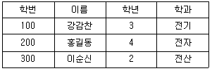
- 2
- 3
- 4
- 9
(정답률: 76%)
8. 관계 데이터 모델에서 애트리뷰트가 취할 수 있는 값들의 집합을 의미하는 것은?
- 릴레이션
- 도메인
- 튜플
- 차수
(정답률: 59%)
9. 다음 관계 대수의 의미로 가장 타당한 것은?
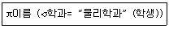
- 이름, 학과 물리학과를 속성으로 하는 전공 테이블 생성
- 학생 테이블에서 물리학과인 학생 이름 삭제
- 학생 테이블에서 물리학과인 학생 이름 조회
- 전공 테이블에서 학과의 이름을 물리학과로 변경
(정답률: 85%)
10. 다음 SQL문에서 DISTINCT의 의미는?
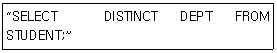
- 검색 결과에서 레코드의 중복 제거
- 모든 레코드 검색
- 검색 결과를 순서대로 정렬
- DEPT의 처음 레코드만 검색
(정답률: 85%)
11. SQL에서 SELECT 문에 나타날 수 없는 절은?
- HAVING
- GROUP BY
- DROP
- ORDER BY
(정답률: 74%)
12. 릴레이션의 특징이 아닌것은?
- 하나의 릴레이션에서 튜플의 순서는 있다.
- 모든 튜플은 서로 다른 값을 갖는다.
- 각 속성은 릴레이션 내에서 유일한 이름을 가진다.
- 모든 속성값은 원자 값이다.
(정답률: 74%)
13. 데이터베이스를 구성하는 데이터 개체, 이들 개체 사이의 속성, 이들 간에 존재하는 관계, 데이터 구조와 데이터 값들이 갖는 제약 조건에 관한 정의를 총칭해서 무엇이라고 하는가?
- VIEW
- DOMAIN
- SCHEMA
- DBA
(정답률: 80%)
14. STUDENT 릴레이션에 대한 SELECT 권한을 모든 사용자에게 허가하는 SQL 명령문은?
- GRANT SELECT FROM STUDENT TO PROTECT;
- GRANT SELECT ON STUDENT TO PUBLIC;
- GRANT SELECT FROM STUDENT TO ALL;
- GRANT SELECT ON STUDENT TO ALL;
(정답률: 66%)
15. In computing, this is the process of rearranging an initially unordered sequence of records until they ordered. What is this?
- debugging
- loading
- sorting
- compiling
(정답률: 69%)
16. 널 값(null value)에 대한 설명으로 옳지 않은 것은?
- 공백(space)과는 다른 의미이다.
- 아직 알려지지 않은 모르는 값이다.
- 영(zero)과 같은 값이다.
- 정보의 부재를 나타낼 때 사용하는 특수한 데이터 값이다.
(정답률: 84%)
17. 스택에 데이터를 A, B, C, D 순으로 저장했을 경우, 이들 데이터가 출력되는 결과로 가능한 것은?
- D, B, C, A
- C, B, D, A
- C, D, A, B
- D, A, C, B
(정답률: 64%)
18. 데이터 삽입, 삭제가 top이라고 부르는 한쪽 끝에서만 이루어지는 후입선출(LIFO) 형태의 자료구조는?
- 스택
- 큐
- 데크
- 원형 큐
(정답률: 75%)
19. VIEW의 삭제시 사용되는 SQL 명령은?
- NULL VIEW ~
- KILL VIEW ~
- DELETE VIEW ~
- DROP VIEW ~
(정답률: 82%)
20. 다음 자료에 대하여 선택(Selection)정렬을 사용하여 오름차순으로 정렬하고자 할 경우 1회전 후의 결과로 옳은 것은?
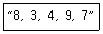
- 3, 4, 8, 7, 9
- 3, 8, 4, 9, 7
- 3, 4, 9, 7, 8
- 7, 9, 4, 3, 8
(정답률: 69%)
2과목: 전자 계산기 구조
21. 데이지 체인(Daisy chain)방식과 폴링(Polling)방식의 설명으로 옳지 않은 것은?
- 폴링 방식은 소프트웨어 방식이다.
- 데이지 체인 방식은 하드웨어 방식이다.
- 데이지 체인 방식이 폴링 방식보다 속도가 빠르다.
- 폴링 방식이 데이지 체인 방식보다 속도가 빠르다.
(정답률: 60%)
22. 폰 노이만(Von Neumann)형 컴퓨터 인스트럭션의 기능에 포함되지 않는 것은?
- 전달 기능
- 제어 기능
- 보존 기능
- 함수 연산 기능
(정답률: 61%)
23. 주기억 장치에서 접근 시간(access time)을 가장 옳게 설명한 것은?
- 판독 신호(read signal)를 발생한 후 자료를 메모리 주소 레지스터에 옮기기까지의 시간
- 판독 신호 발생 후 자료를 메모리 버퍼 레지스터에 옮기기까지의 시간
- 메모리 주소 레지스터의 내용을 메모리 버퍼 레지스터에 옮기기까지의 시간
- 판독 신호를 발생한 후 다음 판독 신호가 발생할 때까지의 시간
(정답률: 43%)
24. 기억 장치를 여러 모듈로 나누고, 한 번지(Address)액세스 시에 다음에 사용할 번지를 미리 액세스하여 처리 속도를 향상시키는 접근 방법은?
- 인터리빙
- 페이징
- 세그먼팅
- 스테이징
(정답률: 50%)
25. 디스크에서 CAV 방식에 의한 단점에 해당되는 것은?
- 저장 공간의 낭비
- 처리 속도의 저하
- 다수의 단말 장치 필요
- 제한적 오류 검출
(정답률: 51%)
26. 다음 마이크로 오퍼레이션과 관계있는 것은?
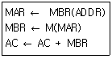
- AND
- BSA
- ADD
- JMP
(정답률: 58%)
27. 논리 마이크로 연산을 수행하기 위하여 다음과 같은 식이 주어졌을 때 옳지 않은 것은?
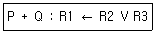
- P가 1 이면 R1의 내용은 변할 수도 있다.
- P 또는 Q가 1 이면 데이터 전송이 일어난다.
- “V”는 논리 마이크로 연산 OR를 나타낸다.
- “+”는 덧셈 마이크로 연산을 나타낸다.
(정답률: 55%)
28. 간접 주소지정 방식에서 명령어 ADD(47)이 수행되면 다음 중 어느 것이 연상장치로 보내지는가? (단, 기억장소 47번지에는 2002가 저장되어 있다.)
- 2002
- 2002번지의 내용
- 47
- 47번지의 내용
(정답률: 63%)
29. 동기 가변식 마이크로 사이클에 관한 설명으로 틀린 것은?
- CPU의 시간을 효율적으로 이용할 수 있다.
- 마이크로 오퍼레이션 수행시간이 현저한 차이를 나타낼 때 사용한다.
- 제어기의 구현이 단순하다.
- 그룹화된 각 마이크로 오퍼레이션들에 대하여 서로 다른 사이클 시간을 정의한다.
(정답률: 68%)
30. 함수연산기능 인스트럭션의 수행에 필요한 피연산자를 기억시킬 레지스터의 종류에 따라 컴퓨터 구조를 분류할 때, 이에 속하지 않은 것은?
- 스택 컴퓨터구조
- AC 컴퓨터구조
- 리스트 컴퓨터구조
- 범용 레지스터 컴퓨터구조
(정답률: 45%)
31. 다음 중 특정 비트를 1로 설정하기 위해서 사용되는 논리 게이트는?
- NOT
- OR
- AND
- EX-OR
(정답률: 56%)
32. 다음 중 조합논리회로가 아닌 것은?
- 감산기
- 디코더
- 카운터
- 디멀티플렉서
(정답률: 56%)
33. 컴퓨터의 메모리 용량이 64K X 32bit라 하면 MAR(Memory Address Register)와 MBR(Memory Buffer Register)는 각각 몇 비트인가?
- MAR : 16, MBR : 16
- MAR : 32, MBR : 16
- MAR : 8, MBR : 16
- MAR : 16, MBR : 32
(정답률: 59%)
34. 주기억장치의 용량이 512KB인 컴퓨터에서 32비트의 가상 주소를 사용하는데, 페이지의 크기가 1K워드이고 1워드가 4바이트라면 주기억장치의 페이지 수는?
- 32개
- 64개
- 128개
- 512개
(정답률: 60%)
35. Branch 혹은 Jump 명령문은 어느 Register를 수정하는가?
- Accumulator
- MAR(Memory Address Register)
- MBR(Memory Buffer Register)
- PC(Program Counter)
(정답률: 52%)
36. 단항(Unary)연산을 행하는 것은?
- SHIFT
- AND
- OR
- 사칙 연산
(정답률: 65%)
37. 키보드(keyboard)의 키를 눌렀을 때 발생하는 인터럽트의 종류는?
- 외부적 인터럽트(external interrupt)
- 내부적 인터럽트(internal interrupt)
- 트랩(trap)
- 소프트웨어 인터럽트(software interrupt)
(정답률: 76%)
38. 연관 기억장치(associative memory)에 대한 설명 중 가장 옳지 않은 것은?
- 데이터의 내용에 액세스 되는 메모리 장치이다.
- 메모리의 각 셀(cell)은 저장 능력뿐만 아니라 외부의 인수(argument)와 내용을 비교하기 위한 논리 회로를 갖고 있다.
- 데이터를 병렬 검색하는데 알맞게 되어 있으며, 데이터의 검색은 전체 워드를 가지고 시행된다.
- 검색시간이 중요하고, 매우 짧아야 하는 특수한 경우에만 사용된다.
(정답률: 43%)
39. 컴퓨터 실행 중 특수한 상태가 발생할 때 제어장치의 조정에 의해 특수한 상태를 처리한 후 먼저 수행하는 프로그램으로 되돌아가는 조작은?
- Interrupt
- Controlling
- Trapping
- Deadlock
(정답률: 76%)
40. 어떤 제어 기억장치의 단어 길이가 32비트, 마이크로명령어 형식의 연산필드는 12비트, 조건을 결정하는 플래그의 수는 4개일 때, 제어 기억장치의 최대 용량은 약 몇 Byte인가? (단, 분기필드는 필요하지 않다고 가정한다.)
- 8.4MB
- 4.2MB
- 2.4MB
- 1.1MB
(정답률: 42%)
3과목: 시스템분석설계
41. HIPO의 3가지 패키지가 아닌 것은?
- 도식목차(visual table of contents)
- 순서도(flowchart)
- 총괄도표(overview diagram)
- 상세도표(detail diagram)
(정답률: 57%)
42. 객체지향기법에서 데이터와 데이터를 조작하는 연산을 하나로 묶어 하나의 모듈 내에서 결합되도록 하는 것은?
- 객체
- 캡슐화
- 다형성
- 추상화
(정답률: 74%)
43. 시스템에 대한 정의로 옳지 않은 것은?
- 예정된 기능을 수행하기 위하여 설계된 상호작용을 갖는 요소의 유기적 집합체이다.
- 어떤 목적을 위해 하나 이상의 기능요소가 상호 관련하여 유기적으로 결합된 것이다.
- 공통된 목적을 위해 기여할 수 있는 많은 부문으로 구성되는 복잡한 단일체이다.
- 상호 관련 없는 구성요소가 조합되어 특정 목적을 위해 독립적으로 결합된 것이다.
(정답률: 68%)
44. 다음에 해당하는 출력 설계 단계는?
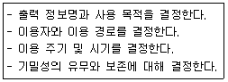
- 출력 정보 내용의 설계
- 출력 정보 이용에 대한 설계
- 출력 정보 매체화의 설계
- 출력 정보 분배에 대한 설계
(정답률: 71%)
45. 파일설계단계 중 다음 사항과 연관되는 것은?
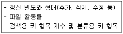
- 파일 특성 조사
- 파일 매체 검토
- 파일 편성법 검토
- 파일 항목 검토
(정답률: 55%)
46. 입력 데이터가 기록되는 디스켓, 자기테이프, 디스크, OMR 등의 규격을 결정하는 것은 어느 단계인가?
- 입력 매체의 설계
- 입력 원표의 설계
- 파일 구조의 설계
- 처리 단계의 설계
(정답률: 65%)
47. 다음 중 컴퓨터 입력 단계의 체크에 해당하지 않는 것은?
- Unmatched record check
- Batch total check
- Sequence check
- Balance check
(정답률: 48%)
48. 파일 편성 방법 중 순차파일 편성 방법의 특징이 아닌 것은?
- 레코드 추가, 삭제 시 파일 전체를 복사할 필요가 없다.
- 집계용 파일이나 단순한 마스터 파일 등이 대표적인 응용파일이다.
- 기본 키 값에 따라 순차적으로 배열되어 있다.
- 기억공간의 활용률이 높다.
(정답률: 64%)
49. 표준 처리 패턴 중 다음 설명이 의미하는 것은?
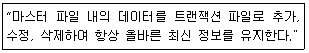
- 갱신
- 병합
- 정렬
- 분배
(정답률: 82%)
50. 파일 설계 단계에서 파일 매체 검토 시 고려사항이 아닌 것은?
- 파일 활동률
- 작동 용이성
- 정보량
- 처리 시간
(정답률: 44%)
51. 프로세스 설계의 유의 사항이 아닌 것은?
- 프로세스 전개의 사상을 동일한다.
- 하드웨어의 기기 구성, 처리 성능을 고려한다.
- 운영체제를 중심으로 한 소프트웨어의 효율성을 고려한다.
- 오류에 대비한 체크 시스템의 고려는 필요 없으며, 분류 처리를 가능한 최대화 한다.
(정답률: 75%)
52. 다음과 같은 코드의 명칭은?
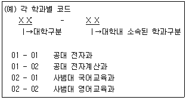
- Block code
- Decimal code
- Sequence code
- Significant digit code
(정답률: 55%)
53. 입ㆍ출력 자료 및 코드의 설계는 시스템 설계 단계의 어느 단계에서 해야 하는가?
- 조사분석단계
- 상세설계단계
- 프로그램작성단계
- 실시단계
(정답률: 56%)
54. IPT의 기법과 가장 거리가 먼 것은?
- 구조적 설계
- HIPO
- 구조적 코딩
- 상향식 프로그래밍
(정답률: 64%)
55. 코드 기입 과정에서 "2006" 으로 표기해야 하는데 "2060" 으로 표기하였을 때의 오류는?
- Transcription Error
- Transposition Error
- Addition Error
- Random Error
(정답률: 73%)
56. 구조적 설계에서 기능 수행 시 모듈간의 최소한의 상호작용으로 하나의 기능만을 수행하는 정도를 표현하는 용어는?
- 응집도
- 캡슐화
- 모듈화
- 정보은폐
(정답률: 51%)
57. 프로세스 설계 시 유의해야 할 사항으로 가장 거리가 먼 것은?
- 사용자의 하드웨어와 프로그래밍에 관한 상식 수준을 고려한다.
- 신뢰성과 정확성을 고려하여 처리 과정을 명확히 표현한다.
- 시스템의 상태 및 구성요소, 기능 등을 종합적으로 표시한다.
- 오류에 대비한 체크 시스템도 고려한다.
(정답률: 71%)
58. 다음 중 시스템 분석가가 갖추어야 할 능력과 요건으로 가장 거리가 먼 것은?
- 기계 중심적인 분석 능력
- 거시적 관점에서 세부적 요소들을 관찰할 수 있는 능력
- 사용자와 개발 요구자의 환경 이해 능력
- 서술 또는 구술 형식으로 의사소통할 수 있는 능력
(정답률: 69%)
59. 시스템의 신뢰성 평가를 위한 검토 항목으로 가장 거리가 먼 것은?
- 프로그램 표준화
- 시스템을 구성하고 있는 각 요소의 신뢰도
- 신뢰성 향상을 위해 이미 시행한 처리에 대한 경제적 효과
- 시스템 전체의 가동률
(정답률: 37%)
60. 문서화의 목적으로 거리가 먼 것은?
- 시스템 보수 및 운용하는 그룹에 인계인수 작업이 용이하다.
- 개발자의 순서도 작성, 코딩, 디버깅 테스트만을 위해서 문서화를 수행한다.
- 시스템 개발 프로젝트의 관리가 용이하다.
- 개발 전척 관리의 지표가 될 수 있다.
(정답률: 76%)
4과목: 운영체제
61. 스케줄링 방식에서 평균 대기 시간이 가장 짧은 것은?
- round-robin
- SRT
- SJF
- FIFO
(정답률: 48%)
62. 보안 메커니즘(mechanism)의 설계 원칙 중 개방된 설계의 의미를 가장 잘 설명한 것은?
- 알고리즘은 알려졌으나, 그 키는 비밀인 암호 시스템의 사용을 의미한다.
- 트로이 목마로부터의 피해를 제한하기 위해 모든 주체는 업무 완수에 필요한 최소한의 특권만을 사용해야 한다.
- 가능하다면 객체에 대한 접근은 하나 이상의 조건을 만족해야 한다.
- 가능한 한 기능 검증과 정확한 구현을 쉽게 할 수 있도록 간단히 설계한다.
(정답률: 60%)
63. 스케줄링의 목적으로 가장 옳지 않은 것은?
- 단위 시간당 처리량을 최대화 시키기 위하여
- 오버헤드를 최대화 시키기 위하여
- 응답시간과 자원의 활용간에 균형을 유지하기 위하여
- 대화식 사용자에게 가능한 빠른 응답을 주기 위하여
(정답률: 72%)
64. 교착상태가 존재하기 위한 4가지 필요 조건으로 옳지 않은 것은?
- 프로세스들이 필요로 하는 자원에 대해 배타적인 통제권을 요구한다.
- 프로세스가 다른 자원을 기다리면서 이미 할당된 자원을 갖고 있다.
- 자원은 사용이 끝날때까지 이들이 갖고 있는 프로세스로부터 제거할 수 없다.
- 프로세스가 자원을 선점하기 위한 우선순위를 결정한다.
(정답률: 47%)
65. O/S 성능평가의 이용가능도(Availability)를 가장 잘 설명한 것은?
- 동일한 시간(단위 시간) 내에서 얼마나 많은 작업량을 처리할 수 있는가의 요인
- 요청한 작업에 대한 결과를 사용자에게 반환 할 때까지 소요되는 시간
- 작업의 결과를 얼마나 정확하고 믿을 수 있는가의 요인
- 시스템의 전체 운영 시간 중에서 실제 가동하여 사용 중인 시간의 비율
(정답률: 48%)
66. 파일 디스크립터에 대한 설명으로 옳지 않은 것은?
- 파일마다 독립적으로 존재하며, 시스템에 따라 다른 구조를 가질 수 있다.
- 파일 제어 블록(FCB)이라고도 한다.
- 사용자가 관리하므로 사용자가 직접 참조할 수 있다.
- 파일 관리를 위해 시스템이 필요로 하는 정보를 가지고 있다.
(정답률: 70%)
67. 자원 보호 기법 중 접근 제어 행렬에서 수평으로 있는 각 행들만을 따온 것으로서 각 영역에 대한 권한은 객체와 그 객체에 허용된 연산자로 구성되는 것은?
- Global Table
- Access Control List
- Capability List
- Lock/Key
(정답률: 51%)
68. 가상기억장치에 대한 설명으로 가장 거리가 먼 것은?
- 주기억장치 용량보다 훨씬 큰 프로그램이나 데이터를 저장할 수 있다.
- 프로그램 실행 시 주소변환 작업이 필요하다.
- 가상기억장치 구현방법으로 페이징과 세그먼테이션이 있다.
- 수행중인 프로그램에서 사용된 주소가 반드시 주기억장치에서 사용가능한 주소이어야 한다.
(정답률: 56%)
69. 프로세스 스케줄링 방법 중 시분할 시스템을 위해 고안되었으며, 타임 슬라이스라는 작은 단위 시간이 정의되고 이 단위 시간 동안 CPU를 제공하는 방법은?
- 선입선출
- 다단계 큐
- 라운드 로빈
- 다단계 피드백 큐
(정답률: 69%)
70. 병행 프로세스의 상호배제 구현 기법으로 거리가 먼 것은?
- 데커 알고리즘
- 피터슨 알고리즘
- Test and set 명령어 기법
- 은행원 알고리즘
(정답률: 64%)
71. 디스크 스케줄링 중에서 탐색거리가 가장 짧은 요청이 먼저 서비스를 받는 스케줄링 기법은?
- FCFS
- SCAN
- SSTF
- C-SCAN
(정답률: 61%)
72. 분산 운영체제 시스템에 관한 설명으로 옳지 않은 것은?
- 약결합(loosely-coupled)으로 볼 수 있다.
- 업무량 증가에 따른 점진적인 확장이 가능하다.
- 높은 보안성이 유지된다.
- 제한된 자원을 여러 지역에서 공유 가능하다.
(정답률: 71%)
73. 주기억장치에서 빈번하게 기억 장소가 할당되고 반납됨에 따라 기억장소들이 조각들로 나누어지는 현상은?
- compaction
- fragmentation
- coalescing
- collision
(정답률: 62%)
74. 시스템소프트웨어로 가장 거리가 먼 것은?
- 컴파일러
- 어셈블러
- 스프레드시트
- 로더
(정답률: 67%)
75. 세마포어(semaphore)에 관한 설명 중 옳지 않은 것은?
- 상호배제 문제를 해결하기 위하여 사용된다.
- 정수의 변수로서 양의 값만을 가진다.
- 여러 개의 프로세스가 동시에 그 값을 수정하지 못한다.
- 세마포어에 대한 연산은 처리 도중에 인터럽트 되어서는 안된다.
(정답률: 59%)
76. 디스크 대기 큐에 다음과 같은 순서(왼쪽부터 먼저 도착한 순서임)로 트랙의 액세스 요청이 대기 중이다. 모든 트랙을 서비스하기 위하여 FCFS 스케줄링 기법이 사용되었을 때, 모두 몇 트랙의 헤드 이동이 생기는가? (단, 현재 헤드의 위치는 50 트랙이다.)
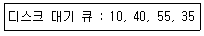
- 50
- 85
- 1⑤
- 110
(정답률: 54%)
77. 병렬처리의 주종(Master/Slave)시스템에 대한 설명으로 옳지 않은 것은?
- 주프로세서는 입출력과 연산을 수행한다.
- 종프로세서는 입출력 발생시 주프로세서에게 서비스를 요청한다.
- 종프로세서가 운영체제를 수행한다.
- 비대칭 구조를 갖는다.
(정답률: 68%)
78. UNIX 시스템에서 파일의 권한 모드 설정에 관한 명령어는?
- chgrp
- chmod
- chown
- cpio
(정답률: 73%)
79. 기억장치의 배치(Placement)전략에 대한 설명으로 가장 옳은 것은?
- 새로 반입된 프로그램을 주기억장치의 어디에 위치시킬 것인가를 결정하는 전략
- 주기억장치에 넣을 다음 프로그램이나 데이터를 보조기억장치에서 언제 가져올 것인가를 결정하는 전략
- 새로 주기억장치에 배치되어야 할 프로그램이 적재될 장소를 마련하기 위해 어떤 프로그램이나 데이터를 제거할 지 결정하는 전략
- 실행 중인 프로그램에 의해 참조될 프로그램이나 데이터를 미리 예상하여 적재하는 전략
(정답률: 56%)
80. UNIX시스템의 계층 구조 중 가장 하드웨어와 관련이 없고 사용자와 밀접하므로 사용자의 명령을 입력으로 받아 그 명령을 해석하는 역할을 하는 계층은?
- 커널
- 쉘
- 기억장치 관리기
- 스케줄러
(정답률: 64%)
5과목: 정보통신개론
81. OSI7계층 중 데이터링크 계층에 해당되는 프로토콜이 아닌 것은?
- HDLC
- PPP
- LLC
- UDP
(정답률: 56%)
82. 데이터 전송의 형태에서 한 문자 전송시마다 스타트비트와 스톱비트를 삽입하여 전송하는 방식은?
- 동기식
- 비동기식
- 베이스 밴드식
- 혼합동기식
(정답률: 54%)
83. 회선 양쪽 시스템이 처리 속도가 다를 때 데이터양이나 통신 속도를 수신 측이 처리할 수 있는 능력을 넘어서지 않도록 조정하는 기술은?
- 인증제어
- 흐름제어
- 오류제어
- 동기화
(정답률: 73%)
84. 데이터링크 계층의 기능에 관한 내용으로 틀린 것은?
- 인접노드간의 흐름제어와 에러제어 기능을 수행한다.
- 매체공유를 위한 매체접근제어(MAC)를 수행한다.
- 발신지에서 목적지까지 최적의 패킷 전송경로를 설정한다.
- 프레임을 노드에서 노드로 전달한다.
(정답률: 47%)
85. 샤논-하트레이(Shannon Hartley)의 통신채널용량(bps)은? (단, C : 채널용량, B : 채널의 대역폭, S : Signal, N : Noise)
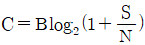
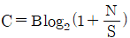
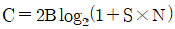
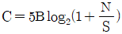
(정답률: 53%)
86. HDLC 링크구성 방식에 따른 세 가지 동작모드에 해당하지 않는 것은?
- 정규응답모드(NRM)
- 동기응답모드(SRM)
- 비동기응답모드(ARM)
- 비동기균형모드(ABM)
(정답률: 46%)
87. 9600bps의 전송속도를 갖는 모뎀이 4개의 위상을 갖는 QPSK로 변조될 때 변조속도(baud)는?
- 4800
- 2400
- 1200
- 600
(정답률: 48%)
88. 고속의 송신 신호를 다수의 직교하는 협대역 반송파로 다중화시키는 변조방식으로 가장 옳은 것은?
- TDM
- OFDM
- FDM
- SSL
(정답률: 45%)
89. 오류를 제어할 때 수신측에서 오류의 검출기능과 정정기능을 동시에 갖는 부호는?
- Hamming Code
- Parity Code
- ASCII Code
- EBCDIC Code
(정답률: 61%)
90. IPv6의 특징으로 틀린 것은?
- IPv6의 주소의 길이는 256비트이다.
- 암호화와 인증 옵션 기능을 제공한다.
- 프로토콜의 확장을 허용하도록 설계되었다.
- 흐름 레이블(Flow Label)이라는 항목이 추가되었다.
(정답률: 63%)
91. 라우팅(Routing)프로토콜이 아닌 것은?
- BGP
- OSPF
- SMTP
- RIP
(정답률: 49%)
92. 10 Base T 근거리통신망의 특성을 올바르게 나타낸 것은?
- 10Mbps, Baseband, Twisted pair cable
- 10Gbps, Baseband, Twisted pair cable
- 10Gbps, Broadband, Coaxial cable
- 10Mbps, Broadband, Coaxial pair cable
(정답률: 60%)
93. 다음이 설명하고 있는 것은?
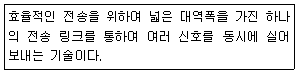
- 집중화
- 다중화
- 복호화
- 공유화
(정답률: 61%)
94. PCM(Pulse Code Modulation)방식의 구성 절차로 옳은 것은?
- 양자화 → 부호화 → 표본화 → 복호화
- 표본화 → 양자화 → 부호화 → 복호화
- 표본화 → 부호화 → 양자화 → 복호화
- 양자화 → 표본화 → 복호화 → 부호화
(정답률: 74%)
95. OSI-7 계층 중 암호화, 데이터 압축, 코드변환등의 기능을 수행하는 계층은?
- 전송 계층
- 응용 계층
- 물리 계층
- 프리젠테이션 계층
(정답률: 51%)
96. 이동통신망에서 사용되는 다원접속(Multiple Access)방식이 아닌 것은?
- CDMA
- KDMA
- TDMA
- FDMA
(정답률: 55%)
97. HDLC에서 한 프레임(Frame)을 구성하는 요소로 가장 거리가 먼 것은?
- Flag
- Address Field
- Control Field
- Start/Stop bit
(정답률: 62%)
98. LAN의 접근방식에 따른 분류에 해당하지 않는 것은?
- CSMA/CD
- 토큰 링
- 토큰 버스
- 캐리어 밴드
(정답률: 63%)
99. 동일 건물에 있는 다양한 컴퓨터 기기들을 상호 연결하여 정보통신망에 연결된 다른 기기나 주변기기들과 공유할 수 있도록 설계한 네트워크 형태(topology)는?
- 패킷교환망(PSDN)
- 부가가치통신망(VAN)
- 근거리통신망(LAN)
- 공중전화망(PSTN)
(정답률: 74%)
100. M진 PSK에서 반송파간의 위상차는? (단, M은 진수이다)
- π×M
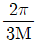
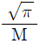
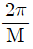
(정답률: 64%)